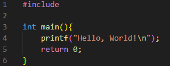

이식성이 좋고 어셈블리어보다 쉬운 언어가 필요해 개발된 언어로 현재 널리 사용되는 모든 운영체의 커널은 대부분 C 언어를 이용해 구현
장점 1. C 언어는 이식성이 좋아 다양한 하드웨어에서 실행 가능
장점 2. C 언어는 절차 지향 프로그래밍 언어로, 코드가 복잡하지 않아 상대적으로 유지보수가 쉬움
장점 3. C 언어는 저급 언어의 특징을 갖고 있어 어셈블리어 수준으로 하드웨어 제어 가능
장점 4. C 언어는 코드가 간결하여, 완성된 프로그램의 크기가 작고 실행 속도가 빠름
단점 1. C 언어는 저급 언어의 특징을 갖고 있어 자바와 같은 다른 고급 언어보다 배우기 힘듦
단점 2. C 언어는 시스템 자원 직접 제어로 인해 프로그래밍 시 세심한 주의가 필요함
운영체제 및 디바이스 드라이버
마이크로컨트롤러
임베디드 시스템
암호학 라이브러리
프로그래밍 언어 인터프리터
웹 서버
데이터베이스
애플리케이션
